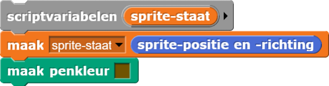
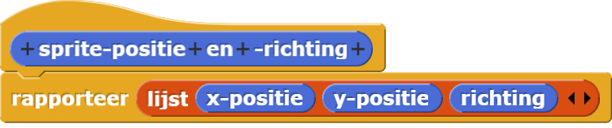

Varieer je boom
-
Experimenteer! Probeer je boom te variëren op de volgende manieren:
Na elk experiment kan je het beste terug keren naar het oorspronkelijke script, zodat je altijd precies weet welke veranderingen in je script gerelateerd zijn aan de veranderingen op het speelveld.
- Verander de draaihoek.
- Verander de schaalfactor.
- Verander het aantal takken op elk niveau.
- Verander de vertakkingstructuur .
Bomen kunnen bijvoorbeeld takken langs de stam hebben
 of zelfs een gebogen stam
of zelfs een gebogen stam
 .
.
Wanneer je ingewikkeldere structuren gebruikt of de stam buigt, dan wordt het moeilijker om de sprite terug te keren naar zijn originele, positie-behoudende staat-transparantie. In plaats van dat je iedere verandering stap voor stap terugdraait, kan je de startpositie onthouden op de volgende manier:
met een blok zoals dit:

en bouw een blok dat de sprite terugzet naar zijn originele positie.
- Verander de dikte van je pen, zodat de stam echt dik is en de blaadjes dun

-
Maak een bruine stam en takken en groene bladeren.
Je hoeft de afbeelding niet precies na te maken.
- Je hebt waarschijnlijk gemerkt dat het debuggen van de groene blaadjes moeilijker was dan het debuggen van de pendikte. Wat ging er mis bij het tekenen van de groene blaadjes? Waarom had je hetzelfde probleem niet bij het veranderen van de pen dikte?
-
Maar de keuzes voor hoeken en schaalfactoren een beetje willekeurig. Hier zijn wat
voorbeelden:


-
Maak een bos door gevarieerde bomen willekeurig te planten op het speelveld.